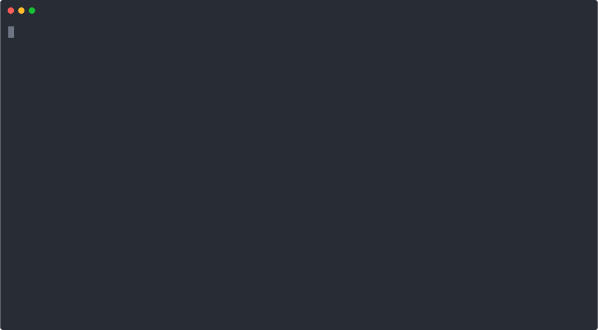

Jump to heading What's new in phabalicious 3.8?
Jump to heading What has changed?
Jump to heading PHP 7.3 required
Phabalicious requires now PHP version 7.3. It should work with newer versions, including 8.1
Jump to heading Better integration with 1Password cli/ connect
- Support for version 2 of the cli
- added new script callback
get_file_from_1passwordwhich will retrieve an encrypted file from 1password, decrypt it and store it somewhere, suitable when scaffolding.
Jump to heading Encryption and decryption
Phab supports now encryption and decryption of files and strings. It uses defuse/php-encryption, a widely used library for encryption under the hood. You can encrypt files in a script with
secrets:
name-of-secret:
question: What is the password?
scripts:
encrypt:
- encrypt_files(path/to/files/or/folders/to/encrypt/*.ext, path/to/folder/to/store/encrypted/files, name-of-secret)
decrypt:
- decrypt_files(path/to/files/or/folders/to/decrypt/*.enc, path/to/folder/to/store/decrypted/files, name-of-secret)The scaffolder has a new callback called decrypt_assets which works the same as copy_assets but with an additional
decryption step
scaffold:
- decrypt_assets(targetFolder, dataKey, secretName, twigExtension)You can also use decrypt() and encrypt() in your scaffold templates using the provided twig-functions:
test.yml
data:
my_secret_data: "{{ decrypt(my_secret_data, 'name-of-secret') }}"
encrypted: "{{ encrypt("Hello world", 'name-of-secret') }}"
Jump to heading
New command install:from-sql-file
The command install:from and the new command install:from-sql-file get reworked to prevent double-work and to
streamline the process. You can now install the app from an existing sql-file, which translates into an optimized
flow of
phab -cmy-host-config install
phab -cmy-host-config restore:sql-from-file sql.gz
phab -cmy-host-config resetInstead run
phab -cmy-host-config install:from-sql-file sql.gzJump to heading Refactoring of data-handling
Phab now handles data differently, by storing from which file or url a piece of data was loaded. This enables phab to use relative includes, even for remote configurations. Now you can do things like
base.yml
hosts:
test:
foo: Hello world
bar: Hello from base.yml
fabfile.yml:
inheritsFrom:
- ./base.yml
needs:
- local
hosts:
test:
foo: Hello marsRunning output will show the resolved inheritances:
❯ phab38 -ctest output --what host
Output of host-configuration `test`
===================================
test:
foo: 'Hello mars'
bar: 'Hello from base.yml'
needs:
- local
- script
type: dev
.
.
.This enhances also the introspection possibilities:
Jump to heading
The about command got a -v flag
The about command has another trick up its sleeve now. When inheriting configurations from multiple files, it can now
display the exact location from which a particular parameter is being picked. Thus, finding out if a value is coming from an inherited file from a remote server or some sensible defaults is at your fingertip.
Let's have a look at an example to see this in action. The command displays not only the active value for a particular key but also the location from which it is picked up.
In our case the ouput of phab -ctest about will show the inheritance very in the second column:
❯ phab about -v -ctest
Configuration of test
=====================
+-----------------------------+-------------------------------------+---------------------------------------------------+
| Key | Value | Inherited from |
+-----------------------------+-------------------------------------+---------------------------------------------------+
| foo | Hello mars | /Users/stephan/Desktop/phab-38-blog/.fabfile.yaml |
| bar | Hello from base.yml | /Users/stephan/Desktop/phab-38-blog/base.yml |
| needs | | /Users/stephan/Desktop/phab-38-blog/.fabfile.yaml |
| needs.0 | local | /Users/stephan/Desktop/phab-38-blog/.fabfile.yaml |
| needs.1 | script | /Users/stephan/Desktop/phab-38-blog/.fabfile.yaml |
| type | dev | host defaults |
.
.
.
Jump to heading
New command find:property
Phab 3.8 contains a new command named find:property which provides a visual prompt where the user can start typing the
name of a property they are interested in. Phab supports you by offering properties via autocomplete. As an alternative
you can hit enter to get a list of suggestions. After you found the property you are interested in, hit return, and phab
will display the actual value of that property, its ancestors and from where it got read.
Here's a short walkthrough using the files and their config from above.

Jump to heading Enhancements to the database command
There's a new subcommand available db:query where you can run a query against the database of a given configuration
without starting a database-shell and run the query manually.
phab -cmy-host-config db:query "show tables"It will try to get the database credentials from the configuration and apply them. This command is only implemented for mysql/mariadb for now.
Jump to heading
New command restic
Phab 3.7 got support for offsite backups via restic. But it was still a bit cumbersome to interact with the restic repository for a given configuration using restic alone. That's why phab now has the restic command. It is applying the configuration and options from the fabfile and you can concentrate on the commands you want to pass to restic. Some examples:
phab -cmy-host-config restic snapshots
phab -cmy-host-config restic -- snapshots --host-name my-config
phab -cmy-host-config restic -- forget --keep-daily=14 --keep-weekly=4 --keep-monthly=6 --group-by host --pruneJump to heading Experimental integration with ddev
ddev is a superb tool for managing local development environments and provides similar features as phabalicious. As it takes a lot of time to maintain a local development stack (like multibasebox) we thought it might make more sense to embrace existing open-source tools.
As ddev is also using docker and docker-compose under the hood it was very unproblematic to integrate ddev with phabalicious.
Phab will read the ddev configuration from .ddev/config.yaml and provide it under the global property ddev. So it's
very easy to provide a phab configuration for your local ddev instance. Instead of copy-pasting the boilerplate into
every project we store it on a central place and inherit from it in the fabfile:
Store this file in a central place, e.g. in your user-folder or on a remote-server. For demonstration purposes we store this in the same folder as the fabfile
the ddev.yml-file:
requires: 3.8.0
dockerHosts:
ddev:
rootFolder: .
runLocally: true
hosts:
ddev:
additionalNeeds:
- ddev
info:
description: Local ddev instance
publicUrls:
- "https://%settings.ddev.name%.ddev.site"
category:
id: 01-local
label: Local development
executables:
drush: /var/www/html/vendor/bin/drush
shellProvider: docker-exec
composerRootFolder: /var/www/html
gitRootFolder: /var/www/html
rootFolder: /var/www/html/web
backupFolder: /var/www/backups
docker:
configuration: ddev
name: ddev-%settings.ddev.name%-web
projectFolder: .the actual .fabfile.yml:
inheritsFrom:
- ./ddev.yml
hosts:
ddev:
# its a drupal installation, so add the drupal-specfic stuff
adminPass: admin
replaceSettingsFile: false
alterSettingsFile: false
executables:
drush: /var/www/html/vendor/bin/drush
needs:
- git
- docker
- drush
- filesrunning phab list:hosts will show sth like this for your ddev-project:
❯ phab list:hosts -v
Available configurations for your project
=========================================
Local development
-----------------
‣ ddev
Local ddev instance
→ https://my-ddev-site.ddev.siteYou can run any command against the ddev site as usual. For controlling app lifetime please use ddev, e.g. ddev start
or ddev stop
Jump to heading
The configs for yarn, npm, composer and laravel changed. The composite property name like yarnBuildCommand is
deprecated, please move the config under a section named yarn. This allows us to add more options for the respective
commands by keeping a structure. Phab will support the old property-names until the next major release, for now you'll
get a friendly reminder.
One of the reasons for this change is the extension of the runContext, which got renamed into context which will adapt
the existing functionality of the script execution contexts. Build commands can now be multiline, but then please
provide the executable-name by yourself:
Old:
hosts:
test:
yarnBuildCommand: build:production
yarnRunContext: docker-hostNew:
hosts:
test:
yarn:
buildCommand:
- yarn build:production
- yarn build:assets
context: docker-image
image: node:16There are two new contexts available which pigypack on the existing functionality of script execution contexts:
docker-imagewill execute the yarn build in a docker image (see script execution contexts for configuration options)docker-image-on-docker-hostsame as above, but it will be executed on the same instance where docker-commands are executed, usually where your dockerConfig points to. (Still experimental)
Jump to heading Smaller enhancements
- Passwords are now obfuscated in phabs output.
- Update-check is now using a maintained [php
- library](https://github.com/consolidation/self-update) and works more reliably. Please that the name of the option for getting a beta-version changed too.
- When importing a sql-dump phab freezes the app, and unfreezes it afterwards. For drupal applications the site will be put in maintenance mode and back.
Jump to heading Switch to conventional commits and semi-automated releases
We switched to the conventional commits convention and introduced standard-release to help us creating proper releases.